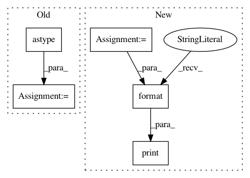

1b46c1cb1650ef0b332cd2e3a84b3c0e4a764975,dipy/tracking/benchmarks/bench_streamline.py,,bench_length,#,55
Before Change
repeat = 1
nb_points_per_streamline = 100
nb_streamlines = int(1e5)
streamlines = [np.random.rand(nb_points_per_streamline,
3).astype("float32")
for i in range(nb_streamlines)]
print("Timing length() in Cython ({0} streamlines)".format(nb_streamlines))
cython_time = measure("length(streamlines)", repeat)
print("Cython time: {0:.3}sec".format(cython_time))
After Change
print("Speed up of {0:.2f}x".format(python_time/cython_time))
streamlines = DATA["streamlines_arrseq"]
cython_time_arrseq = measure("length(streamlines)", repeat)
print("Cython time (ArraySequence): {0:.3}sec".format(cython_time_arrseq))
print("Speed up of {0:.2f}x".format(python_time/cython_time_arrseq))
// Make sure all methods produce the same results.
assert_array_equal([length_python(s) for s in DATA["streamlines"]],
In pattern: SUPERPATTERN
Frequency: 3
Non-data size: 5
Instances
Project Name: nipy/dipy
Commit Name: 1b46c1cb1650ef0b332cd2e3a84b3c0e4a764975
Time: 2017-01-07
Author: marc.cote.19@gmail.com
File Name: dipy/tracking/benchmarks/bench_streamline.py
Class Name:
Method Name: bench_length
Project Name: nipy/dipy
Commit Name: d7dcfeeb5b50fc3f9cf670b2b148efafef0ad3b7
Time: 2017-10-05
Author: marc.cote.19@gmail.com
File Name: dipy/tracking/benchmarks/bench_streamline.py
Class Name:
Method Name: bench_set_number_of_points
Project Name: osmr/imgclsmob
Commit Name: 09e4a76102ff4a06a835180237ea171eb475985c
Time: 2018-09-19
Author: osemery@gmail.com
File Name: keras_/models/mobilenet.py
Class Name:
Method Name: _test